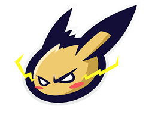
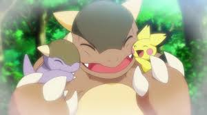

What is the origin of Ash's Pikachu?

Ash's pikachu was just a pichu when it encountered a near-death situation. It was lonely and scared in the forest. It tried to hide in a cave but later found itself near a kangaskhan. It was terrified and tried to run at first, but later found out the kangaskhan showed gratitude. The wild kangaskhan mother adopted it and helped it survive by giving it food and water. Pichu later evolved into a pikachu. It happened because it was overcome with gratitude and emotion. It was later caught by Professor Oak and given to Ash as his starter pokémon later on.